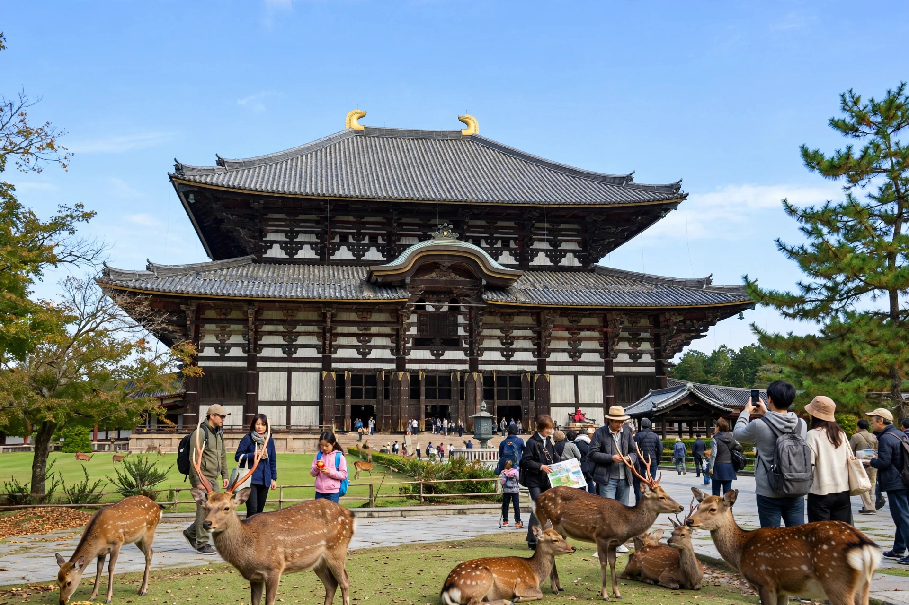

Nara period
The Nara period (奈良時代, Nara jidai) of the history of Japan covers the years from AD 710 to 794. The period is named for its capital, Heijō-kyō (present-day Nara), established by Empress Genmei in 710 on the model of the Chinese Tang capital Chang'an. Except for a brief relocation in 740–745, the capital remained at Nara until Emperor Kanmu moved it to Nagaoka-kyō in 784 and then to Heian-kyō (Kyoto) in 794, beginning the Heian period.

| Nara period | |
|---|---|
| Period | 710 – 794 AD |
| Capital | Heijō-kyō (Nara) |
| Preceded by | Asuka period |
| Followed by | Heian period |
Society and government
Nara Japan was governed under the ritsuryō system of Chinese-style law codes, with a centralised bureaucracy, land taxation and census registration. Most of the population were farmers; the era also saw the growth of private estates (shōen), which gradually weakened the fiscal base of the state.
Culture
The period was a high point of Buddhist culture sponsored by the court, especially under Emperor Shōmu, who ordered provincial temples (kokubunji) across the country and dedicated the Great Buddha (Daibutsu) at Tōdai-ji in 752. The treasures preserved in the Shōsōin storehouse include objects from as far away as Persia, testimony to Silk Road exchange. Literary monuments of the age include the chronicles Kojiki (712) and Nihon Shoki (720), the provincial gazetteers (Fudoki), and the great poetry anthology Man'yōshū (c. 759), compiled in the period's distinctive man'yōgana script.
Foreign relations
Japan sent regular embassies (kentōshi) to Tang China and maintained relations with the Korean kingdom of Silla and with Balhae. Chinese influence shaped law, city planning, coinage and religion, even as Japan adapted these imports to local conditions.